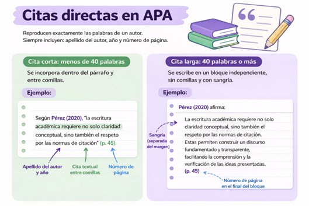
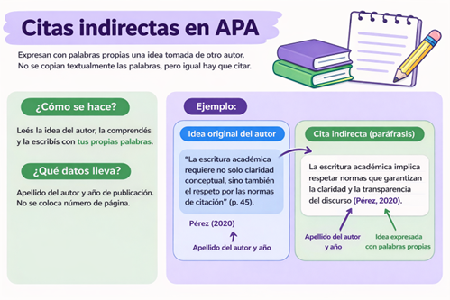
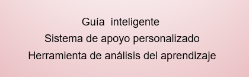
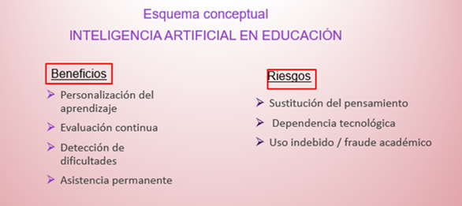
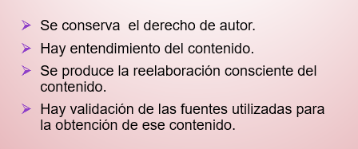
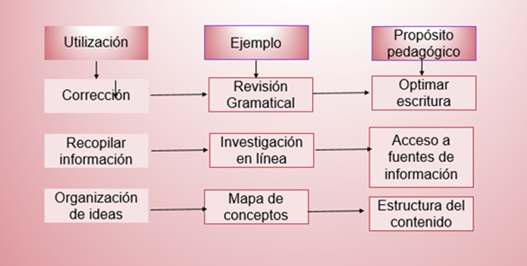
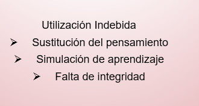

Objetivos de enseñanza
- Introducir a los y las estudiantes en los fundamentos de la escritura académica.
- Comprender las etapas del proceso de producción escrita.
- Reconocer la importancia de las normas de citación en el ámbito universitario.
- Identificar y problematizar el plagio y sus implicancias.
- Analizar el uso de tecnologías en la producción académica.
- Promover la honestidad intelectual como valor central en la producción de conocimiento.
Objetivos de aprendizaje
Se espera que los y las estudiantes puedan:
- Comprender el proceso de escritura académica en sus distintas etapas.
- Diferenciar conceptos clave como lengua, lenguaje, enunciado y discurso.
- Aplicar correctamente normas básicas de citación en formato APA.
- Reconocer distintas formas de plagio y evitarlas.
- Utilizar tecnologías de manera ética en la producción académica.
- Valorar la honestidad intelectual como principio fundamental del trabajo universitario.
Hoy damos inicio a la clase 3 del Curso Inicial de Socialización (CIS), dedicada a la escritura en la universidad. En esta instancia abordaremos la escritura académica como una práctica central de la vida universitaria, vinculada con la construcción de ideas, el diálogo con otras voces, el uso responsable de fuentes y la producción de conocimiento.
Escribir en la universidad no consiste únicamente en expresar una opinión personal. Implica planificar, seleccionar información, construir argumentos, revisar lo producido y reconocer los aportes de otros autores y autoras. Por eso, esta clase propone un recorrido por las principales etapas de la producción escrita, las normas básicas de citación y referencia, el problema del plagio, el uso ético de tecnologías y la honestidad intelectual como principio de trabajo académico.
Esta clase propone una primera aproximación a una idea central: escribir en la universidad es producir conocimiento de manera clara, fundamentada, responsable y honesta.
Material Didáctico Multimedia
Material Didáctico Digital (MDM). (2026).
El Material Didáctico Multimedia de esta unidad se encuentra disponible en formato PDF dentro de la carpeta pdf.
1. La escritura académica como proceso
La escritura en el ámbito universitario constituye una práctica fundamental para la construcción y transmisión del conocimiento. A diferencia de otros contextos de escritura, en la universidad no alcanza con presentar ideas personales: es necesario ponerlas en relación con teorías, autores, evidencias y marcos conceptuales.
En este sentido, la escritura académica permite desarrollar el pensamiento crítico, organizar argumentos y participar de una conversación más amplia con el conocimiento producido por otras personas. Cada texto universitario se inscribe en ese entramado de lecturas, interpretaciones y discusiones.
Escribir académicamente implica transformar una idea inicial en un texto claro, organizado y fundamentado, capaz de dialogar con otros saberes y de sostener una posición propia.
Para producir un texto académico es útil reconocer distintas etapas. Aunque no siempre se desarrollan de manera lineal, estas instancias permiten ordenar el trabajo y mejorar progresivamente la escritura.
Todo texto comienza con una inquietud, una pregunta o una idea inicial. En esta primera instancia se define qué se quiere comunicar y cuál será el punto de partida del trabajo.
Planificar supone delimitar el tema, definir el propósito del texto, anticipar quién será el lector, organizar los ejes principales y seleccionar las fuentes que permitirán fundamentar el desarrollo.
El borrador es una versión inicial del texto. Permite comenzar a plasmar ideas, organizar argumentos y ensayar una primera estructura, sin buscar todavía una versión definitiva.
Revisar implica volver sobre lo escrito para mejorar la claridad, la coherencia, la organización y la precisión conceptual. En esta etapa se ajustan ideas, párrafos, citas y formas de expresión.
La versión final requiere pulir el escrito, cuidar la presentación, verificar las referencias y asegurar que el texto comunique de manera clara aquello que se propuso desarrollar.
Durante este proceso también resulta importante comprender que el lenguaje no es un simple instrumento neutro. La lengua, el lenguaje, los enunciados y los discursos forman parte de los modos en que se construyen sentidos en una comunidad académica. Por eso, escribir en la universidad supone aprender a participar de determinadas formas de comunicación, con reglas, estilos y expectativas propias.
La claridad es una condición central de la escritura académica. Un texto universitario no busca “sonar difícil”, sino comunicar ideas con precisión, ordenar argumentos y facilitar la comprensión del lector.
2. Normas básicas de citación y referencia en el ámbito académico
En el ámbito universitario, la escritura académica implica no solo desarrollar ideas propias, sino también dialogar con el conocimiento producido por otras personas. En este marco, las normas de citación y referencia adquieren un papel central, ya que permiten reconocer las fuentes utilizadas, evitar el plagio y otorgar sustento teórico a los textos.
Lejos de ser una exigencia meramente formal, citar correctamente constituye una práctica académica y ética fundamental. Permite mostrar de dónde provienen las ideas, habilita la consulta de las fuentes y contribuye a la construcción responsable y colectiva del conocimiento.
Tipos de citas en APA
Dentro de los distintos estilos de citación existentes, uno de los más utilizados en las ciencias sociales es el propuesto por las normas APA. Este sistema establece criterios para incorporar citas dentro del texto y para elaborar la lista de referencias al final del trabajo.
Las citas directas reproducen de manera textual las palabras de un autor. Cuando tienen menos de 40 palabras, se incorporan dentro del párrafo y entre comillas. Cuando superan esa extensión, se presentan en un bloque independiente, sin comillas y con sangría. En ambos casos, se debe incluir el apellido del autor, el año de publicación y el número de página.

Citas directas en formato APA.
Nota. Elaboración propia en Canva (2026).
Por su parte, las citas indirectas, también llamadas paráfrasis, expresan con palabras propias una idea tomada de otra fuente. En estos casos no se utilizan comillas, pero igualmente debe indicarse el apellido del autor y el año de publicación. Cambiar la redacción de una idea no elimina la necesidad de citarla.

Citas indirectas en formato APA.
Nota. Elaboración propia en Canva (2026).
Asimismo, las citas pueden incorporarse de dos formas dentro del texto. La cita narrativa integra el nombre del autor en la oración, mientras que la cita parentética ubica los datos entre paréntesis al final de la idea. Ambas formas son correctas; la elección depende del énfasis que se quiera dar al autor o al contenido.
Referencias según el tipo de fuente
Además de las citas dentro del texto, todo trabajo académico debe incluir una lista de referencias al final, donde se detallan de manera completa las fuentes utilizadas. Este apartado permite identificar y localizar cada uno de los materiales citados, garantizando la transparencia del proceso de escritura.
El formato de las referencias varía según el tipo de fuente. En los libros se indica el apellido del autor, la inicial de su nombre, el año de publicación, el título de la obra y la editorial. En los artículos de revista se agrega el nombre de la revista, el volumen, el número y las páginas. En las páginas web se incluye el autor o la institución responsable, el año, el título del contenido y la dirección electrónica correspondiente.
También existen formatos específicos para documentos en PDF, videos, imágenes, tablas o publicaciones en redes sociales. Aunque cada fuente presenta particularidades, todas las referencias comparten un mismo propósito: brindar la información necesaria para reconocer y consultar el material utilizado.
- Tablas: organizan datos en filas y columnas. Deben numerarse, titularse y mencionar la fuente cuando los datos no son propios.
- Figuras: incluyen gráficos, diagramas, imágenes o ilustraciones. Deben numerarse, titularse y, cuando corresponda, indicar su fuente.
- Notas al pie: permiten agregar aclaraciones sin interrumpir la lectura. No reemplazan a las citas, ya que en APA las fuentes se señalan mediante el sistema autor-fecha.
Comprender cómo y por qué citar mejora la calidad de los trabajos académicos y promueve una actitud crítica y responsable frente al conocimiento. Escribir en la universidad implica reconocer que toda producción se inscribe en una trama colectiva de ideas previas y aportes nuevos.
3. Uso asistido de tecnologías y prácticas indebidas
En el contexto universitario actual, atravesado por la expansión de tecnologías digitales y, especialmente, por el desarrollo de la inteligencia artificial, resulta necesario diferenciar entre el uso legítimo de herramientas tecnológicas como apoyo al aprendizaje y su uso indebido como forma de fraude académico.
El uso asistido de tecnologías refiere a la utilización de herramientas digitales como apoyo para estudiar, organizar ideas, revisar textos o acceder a información, sin reemplazar la producción intelectual del estudiante. La tecnología puede acompañar el aprendizaje, pero no debe sustituir la comprensión, la lectura, la reflexión ni la elaboración propia.

Rol de la inteligencia artificial en la educación.
Nota. Elaboración propia (2026).
La tecnología puede ser una aliada cuando se utiliza para revisar la escritura, organizar ideas, buscar información, comprender contenidos o mejorar una producción propia. Su valor formativo depende de que el estudiante mantenga el control del proceso.

Características de los usos válidos de la tecnología.
Nota. Elaboración propia (2026).

Ejemplos de utilización pedagógica de tecnologías.
Nota. Elaboración propia (2026).
En cambio, las prácticas indebidas se vinculan con usos que afectan la integridad, la responsabilidad y la honestidad de la producción intelectual. Estas prácticas pueden implicar la sustitución del pensamiento propio, la simulación de aprendizajes o la presentación como propio de un trabajo generado por otra persona o por una herramienta tecnológica.

Utilización indebida de tecnologías.
Nota. Elaboración propia (2026).
La utilización de tecnología en el ámbito educativo no constituye un problema en sí misma. El problema aparece cuando su uso reemplaza la elaboración propia, debilita el pensamiento crítico o afecta la validez de una evaluación.

Síntesis sobre usos posibles de tecnologías en educación.
Nota. Elaboración propia (2026).
4. Honestidad intelectual y responsabilidad en la producción de conocimiento
La honestidad intelectual puede entenderse como un compromiso activo con la verdad, con el reconocimiento de las fuentes utilizadas y con la responsabilidad sobre aquello que se produce y se comunica. En el ámbito universitario, este principio resulta fundamental para sostener la confianza en el conocimiento y en las prácticas académicas.
De acuerdo con el Centro Internacional para la Integridad Académica, la integridad académica se apoya en valores como la honestidad, la confianza, la equidad, el respeto, la responsabilidad y la valentía. Estos valores orientan tanto las decisiones individuales como las condiciones institucionales necesarias para promover una cultura académica responsable.
Implica decir la verdad, reconocer el trabajo ajeno, presentar evidencias y evitar el engaño.
Permite colaborar, compartir ideas y sostener vínculos académicos basados en trabajos genuinos.
Supone actuar de manera justa, respetar las consignas y reconocer adecuadamente las fuentes utilizadas.
Se expresa en la escucha, el intercambio cuidado, la apertura a otros puntos de vista y la comunicación responsable.
Consiste en asumir las propias decisiones académicas y cumplir con las pautas de trabajo y evaluación.
Implica defender la integridad académica, incluso cuando hacerlo exige asumir riesgos o revisar prácticas propias.
Estos valores no se aprenden de una vez y para siempre: se construyen en la práctica cotidiana. En las aulas virtuales, en los foros, en las actividades grupales y en las evaluaciones, la honestidad intelectual se expresa en decisiones concretas: leer, citar, escribir con palabras propias, revisar, pedir orientación cuando sea necesario y reconocer el aporte de otras personas.
Actividad obligatoria
Se solicita la elaboración, en grupos, de un texto breve de entre 400 y 500 palabras sobre uno de los temas trabajados en la Clase 3.
Podrán elegir, por ejemplo, alguno de los siguientes ejes:
- la escritura académica en la universidad;
- la importancia de citar fuentes;
- el plagio y sus implicancias;
- el uso ético de tecnologías en la producción académica;
- la honestidad intelectual en el trabajo universitario.
El texto deberá desarrollar una idea central de manera clara y ordenada, y estar redactado con un registro adecuado al ámbito universitario. Asimismo, deberá incluir al menos una cita en formato APA, ya sea directa o indirecta, y la referencia completa de la fuente utilizada al final del trabajo.
Para finalizar, deberán incorporar un breve párrafo en el que se explicite cómo fue la organización del trabajo grupal y qué decisiones tomaron para evitar el plagio y sostener la honestidad intelectual durante la elaboración del texto.
- la claridad de la idea central;
- la organización y coherencia del texto;
- la adecuación al registro académico;
- el uso correcto de la cita incorporada;
- la presentación de la referencia;
- la reflexión final sobre el trabajo realizado.
¿Cómo se realiza la entrega?
El trabajo deberá realizarse en grupo, pero la entrega deberá efectuarse de manera individual. Cada estudiante deberá subir el archivo Word en este mismo espacio, haciendo clic en el botón “Agregar entrega”.
Luego, deberá arrastrar el archivo al recuadro correspondiente o hacer clic en la opción “Agregar”, ubicada en el margen superior izquierdo del recuadro. Una vez insertado el archivo, deberá seleccionar “Guardar cambios”. De este modo, la entrega quedará completada.
Conclusión
La escritura en la universidad es un proceso complejo que va mucho más allá de la simple redacción de textos. Implica la construcción de ideas, el uso consciente del lenguaje, la planificación y revisión del trabajo, y el diálogo con el conocimiento existente.
A lo largo de esta clase se recorrió el pasaje desde una idea inicial hasta la producción final de un texto académico, incorporando herramientas fundamentales como las normas de citación, la comprensión del plagio y el uso ético de las tecnologías.
Asimismo, se destacó la importancia de la honestidad intelectual como base para la producción de conocimiento. Este valor no solo fortalece la calidad académica, sino que también contribuye a la formación de profesionales responsables y comprometidos con la sociedad.
Aprender a escribir en la universidad no es únicamente adquirir una técnica: también implica asumir una posición ética frente al conocimiento.
Bretag, T. (Ed.). (2016). Handbook of academic integrity. Springer. https://doi.org/10.1007/978-981-287-098-8
Carson, T. (2010). Lying and deception. Theory and practice. Oxford University Press.
International Center for Academic Integrity. (2025). About. https://www.academicintegrity.org/aws/ICAI/pt/sp/about
Normas APA. (2023). Guía completa de citación en APA 7.ª edición. https://normas-apa.org/
Puche Villalobos, D. J. (2025). La inteligencia artificial y el fraude académico en el contexto universitario. Revista Digital de Investigación y Postgrado, 6(11), 73–93. https://doi.org/10.59654/kg944e15
Estas referencias acompañan los contenidos y recursos trabajados en la clase.